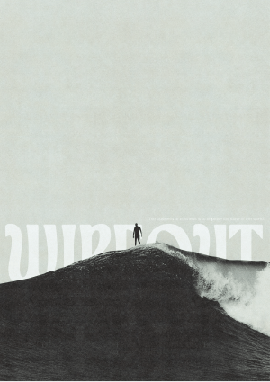

WIPEOUT
Un instant suspendu, figé entre deux forces : celle du vide sous les pieds, et celle de la vague qui s’apprête à tout emporter. Ce moment juste avant la chute, ou l’envol, devient ici une allégorie de la vie. Comme ce surfeur immobile sur le creux de l’eau, chacun traverse des silences avant le tumulte, des reculs avant l’élan. Une image puissante sur l’équilibre fragile entre maîtrise et abandon.